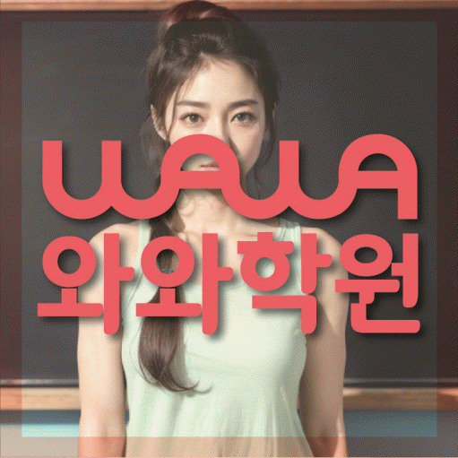

ELEMENTARY MATH
용산동 초등 수학학원
용산동 초등 수학학원 선택 전 수 감각과 연산 원리·수학 개념 설명 진단, 초등학교 자료, 가능 학년과 센터 위치를 확인하세요. 실제 교재로 상담할 질문도 정리했습니다.
01 Quick answer
용산동 초등 수학 학습에서 먼저 확인할 핵심 답변
용산동 초등 수학학원 선택 전에는 학생이 수 감각과 연산 원리에서 멈추는 장면과 수학 개념 설명을 다시 확인하는 방식을 먼저 기록해야 합니다. 현재 교재·학교 진도·단원평가 자료를 준비하면 와와학습코칭센터 이곡점 상담에서 현재 수준과 다음 점검일을 구체적으로 비교할 수 있습니다.
확인 기준
용산동 초등학생 상담에서는 수 감각과 연산 원리·수학 개념 설명의 현재 상태를 실제 자료에서 나누어 확인합니다.


 010-6839-8283
010-6839-8283학습 답변 요약
용산동 초등 수학 학습 자료를 기준으로 진단, 학습 순서, 학교·센터 사실과 상담 질문을 차례로 살펴봅니다.
용산동에서 초등 수학학원을 비교하는 진단 기준
용산동 초등 과정의 우선순위는 잘한 단원보다 멈춘 과정에서 찾습니다. 계산 절차를 외우기보다 수가 바뀌는 이유를 설명하는지를 살핀 뒤 답을 구한 이유를 자기 말로 설명할 수 있는지를 이어 확인하는 순서가 알맞습니다.
같은 오답이라도 수 감각과 연산 원리의 문제인지 수학 개념 설명의 문제인지에 따라 다음 과제가 달라집니다. 용산동 페이지의 센터 정보와 학생 기록을 함께 놓고 판단하세요.
용산동에서 초등 수학학원 상담이 특히 유용한 경우
용산동 초등 수학학원을 우선 살펴볼 학생은 용산동에서 초등 수학 상담을 준비하며 학교 진도와 현재 수준 사이에서 수 감각과 연산 원리 및 수학 개념 설명의 우선순위를 정하기 어려운 초등학생입니다. 이 표현은 등록을 권하는 기준이 아니라 현재 자료와 상담 질문을 정리하기 위한 학습 상황입니다.
추천 여부는 한 번의 점수나 설명만으로 결정하지 않습니다. 계산 과정에서 자릿값과 부호를 표시한 흔적과 풀이 뒤에 이유를 한 문장으로 적은 흔적을 일정 간격으로 비교해 실제 학습 흐름을 살펴보세요. 이 확인 순서는 용산동 초등 수학 학습 자료를 비교할 때 사용할 수 있습니다.
용산동 초등 수학 학습의 첫 점검 주기 설계
용산동 초등 수학학원의 4주 계획은 성과를 약속하는 프로그램이 아니라 상담 내용을 정리하는 조건부 예시입니다. 첫 주에는 수 감각과 연산 원리, 둘째 주에는 수학 개념 설명, 이후에는 문장제 조건 기록을 살피고 마지막 점검에서 다음 범위를 조정할 수 있습니다.
이 예시는 특정 학생의 성과나 실제 수강 결과가 아닙니다. 용산동 학생의 자료, 가능한 일정과 센터의 현재 운영 조건을 확인한 뒤 개별 계획을 정해야 합니다. 용산동 초등 수학 계획에서는 이 내용을 실제 학습 기록과 대조합니다.
수 감각과 연산 원리와 수학 개념 설명을 나누는 용산동 초등 수학 기준
용산동 초등 수학학원 학습에서는 수 감각과 연산 원리와 수학 개념 설명을 같은 분량으로 다루기보다 막힌 원인에 맞춰 시간을 나누어야 합니다. 먼저 ‘수 모형과 식을 연결한 뒤 같은 계산을 다시 풀기’를 실행하고 기록이 남으면 ‘대표 문제를 풀고 사용한 개념을 말로 정리하기’로 이어 갑니다.
가정에서는 짧은 연산을 풀고 틀린 단계만 말로 설명하기와 가족에게 풀이 순서를 짧게 설명해 보기 가운데 하나만 정해 실행해도 좋습니다. 용산동 초등 수학학원 상담에서 완료 여부와 어려웠던 부분을 공유하면 다음 과제량을 조정하기 쉽습니다.
와룡초 자료로 살펴보는 용산동 초등 수학학원 학습 범위
학교 자료가 없는 경우에도 용산동 학생의 현재 교재와 학습 기록으로 시작할 수 있습니다. 실제 학교명과 진도는 상담에서 확인하고 임의로 추정하지 않습니다.
와와학습코칭센터 이곡점의 제공 정보와 학생 학교 자료는 서로 다른 사실입니다. 센터 위치·교습비 경로와 학습 범위·과제 기준을 구분해서 상담 메모에 적어 두세요. 이 기준은 용산동에서 초등 수학 상담을 준비할 때 학생 자료와 함께 확인합니다.
용산동 초등 수학학원 등록 판단 전에 확인할 질문
용산동 상담 메모에는 학습 질문과 운영 질문을 구분해 적으세요. 학생 자료는 수업 방향을, 주소·시간표·교습비는 실제 이용 조건을 확인하는 데 사용합니다. 현재 자료를 비교하는 용산동 초등 수학 과정에서도 이 항목을 별도로 확인합니다.
표시된 가능 학년은 수학 초2·초3·초4·초5·초6이며 실제 개설 여부는 상담 시점에 달라질 수 있습니다. 확인되지 않은 시간표, 차량·주차와 보강 운영은 페이지에서 단정하지 않습니다. 용산동 초등 수학 상담 메모에서는 이 내용과 실제 이용 조건을 나누어 적습니다.
- 현재 자료용산동 초등 수학학원 확인용으로 현재 교재·학교 진도·단원평가 자료에서 수 감각과 연산 원리와 수학 개념 설명이 드러난 부분을 표시합니다.
- 오답 근거용산동 초등 수학 상담에는 계산 과정에서 자릿값과 부호를 표시한 흔적과 식을 세우기 전 그린 그림과 밑줄 친 조건을 서로 나누어 가져갑니다.
- 가능 일정용산동 초등 수학 학습에 필요한 통학 시간, 학교 일정과 가정 복습 시간을 적습니다.
- 센터 확인용산동 초등 수학학원 등록 전에는 와와학습코칭센터 이곡점의 과목·학년·시간표·교습비·보완 방식을 확인합니다.
02 Parent perspective
용산동 초등 수학 학부모 상담 상황
아래 용산동 초등 수학 상담 장면은 실제 이용 후기나 특정 학생의 성과가 아닌 준비용 가상 예시입니다. 학습 결과는 학생의 출발점과 실천 정도에 따라 달라질 수 있습니다.
가정 학습 시간이 일정하지 않은 용산동의 초등 수학 학습 상황을 가정했습니다. 학부모는 많은 과제를 요청하기보다 ‘생활 장면 문제 하나를 그림과 식으로 나타내기’ 활동을 실천할 수 있는 분량과 다음 점검일을 상담에서 확인합니다.
용산동에서 초등 수학 학습 시간이 겹치는 가정의 상담 상황입니다. 학부모는 수 감각과 연산 원리에 집중할 시간과 수학 개념 설명을 복습할 시간을 구분하고 일주일 뒤 어떤 기록으로 계획을 재검토할지 묻습니다.
03 FAQ
용산동 초등 수학 자주 묻는 질문
학생 자료, 가능 학년과 실제 이용 조건을 나누어 답했습니다.
용산동 초등 수학 상담에서는 무엇을 먼저 진단하나요?
초등 수학 상담에서 사용할 첫 진단 기준입니다. 최근 점수만 보지 말고 계산 절차를 외우기보다 수가 바뀌는 이유를 설명하는지와 답을 구한 이유를 자기 말로 설명할 수 있는지를 먼저 살핍니다. 용산동 학생의 현재 교재·학교 진도·단원평가 자료를 가져오면 두 항목이 실제 학습에서 어떻게 나타나는지 구분할 수 있습니다.
용산동의 초등 수학 가능 학년과 실제 수업 일정은 어떻게 확인하나요?
용산동 초등 수학학원 페이지의 제공 센터 사실을 기준으로 답합니다. 주소 자료에는 센터가 대구광역시 달서구 이곡동 달구벌대로259길 33 제일빌딩 5층에 있는 것으로 기재되어 있습니다. 제공 자료에서 확인한 가능 학년은 수학 초2·초3·초4·초5·초6입니다. 교습비 자료는 페이지의 센터별 교습비 확인 버튼에서 볼 수 있습니다. 제공 학년 정보와 별개로 실제 개설 반, 시간표와 보강 방식은 센터 상담에서 다시 확인하는 것이 정확합니다.
와룡초 자료는 용산동 초등 수학 계획에 어떻게 반영하나요?
초등 수학 학교 자료 반영 방식은 실제 학생 자료를 기준으로 확인합니다. 학교명 자체보다 학생이 가져온 범위와 현재 교재의 진행 위치를 확인합니다. 수 감각과 연산 원리와 수학 개념 설명이 드러난 부분을 표시해 주간 과제와 복습 순서에 반영되는지 질문하세요. 와와학습코칭센터 이곡점의 용산동 초등 수학 운영 여부는 상담 시점에 다시 확인합니다.
용산동에서 초등 수학 학습을 하는 학생의 과제량은 어떤 기준으로 정하나요?
초등 수학 과제량은 학생이 수행하고 다시 확인할 수 있는지를 기준으로 비교합니다. 많은 분량보다 ‘수 모형과 식을 연결한 뒤 같은 계산을 다시 풀기’와 ‘대표 문제를 풀고 사용한 개념을 말로 정리하기’ 두 활동을 실제로 마칠 수 있는지를 먼저 봅니다. 완료 기록을 다음 점검에서 확인하고 학교 일정과 가정 학습 시간에 맞춰 분량을 조정하세요. 용산동의 초등 수학 상담에서는 학생 자료와 센터 조건을 함께 확인합니다.
용산동 초등 수학 4주 계획은 어떤 흐름으로 확인하나요?
초등 수학 4주 흐름은 첫 기록과 마지막 재확인 결과를 이어 봅니다. 4주 계획은 성과를 보장하는 과정이 아니라 진단·연습·재확인을 정리한 조건부 예시입니다. 수 감각과 연산 원리의 첫 기록과 문장제 조건의 재확인 결과를 비교해 다음 범위를 조정합니다. 용산동 학부모는 초등 수학 질문과 이용 조건을 나누어 기록해 두세요.
04 Related
용산동 관련 학원·상담 페이지
같은 지역의 과목 조합과 학년 카테고리, 앞뒤 지역 안내를 함께 확인하세요.